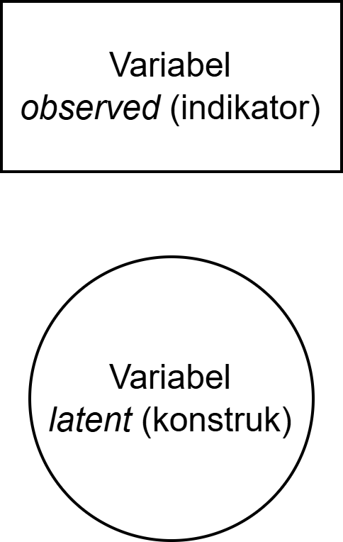
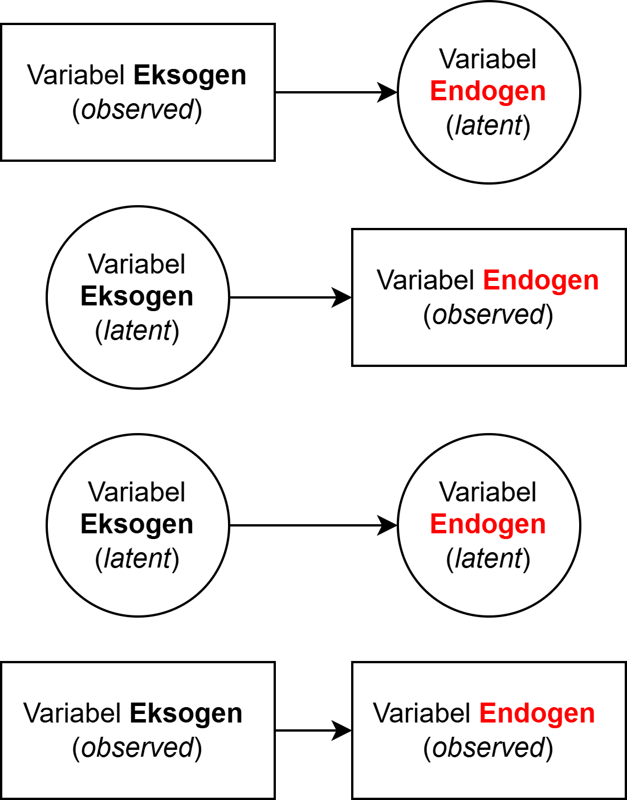
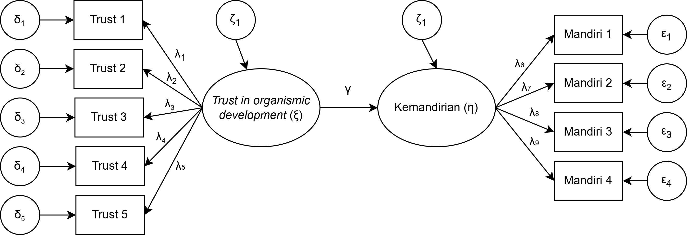
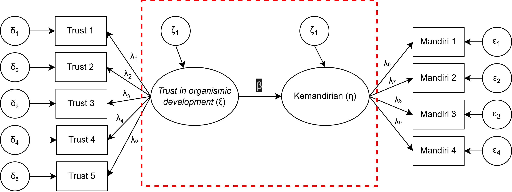
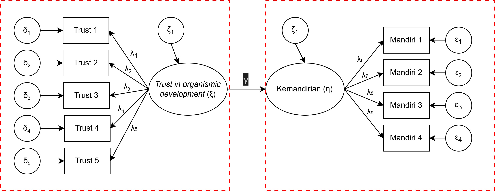
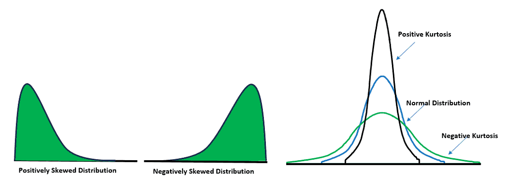
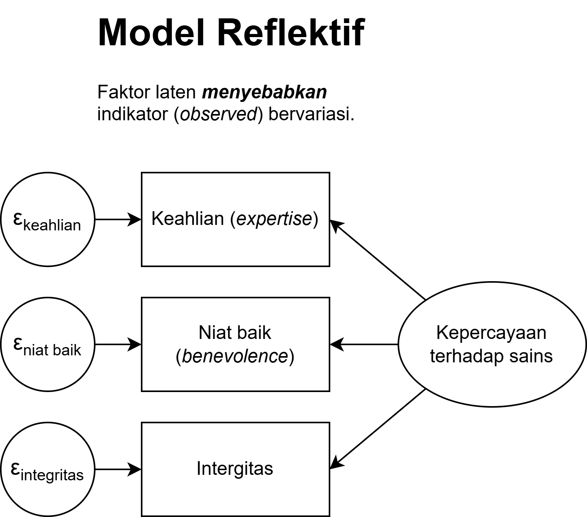
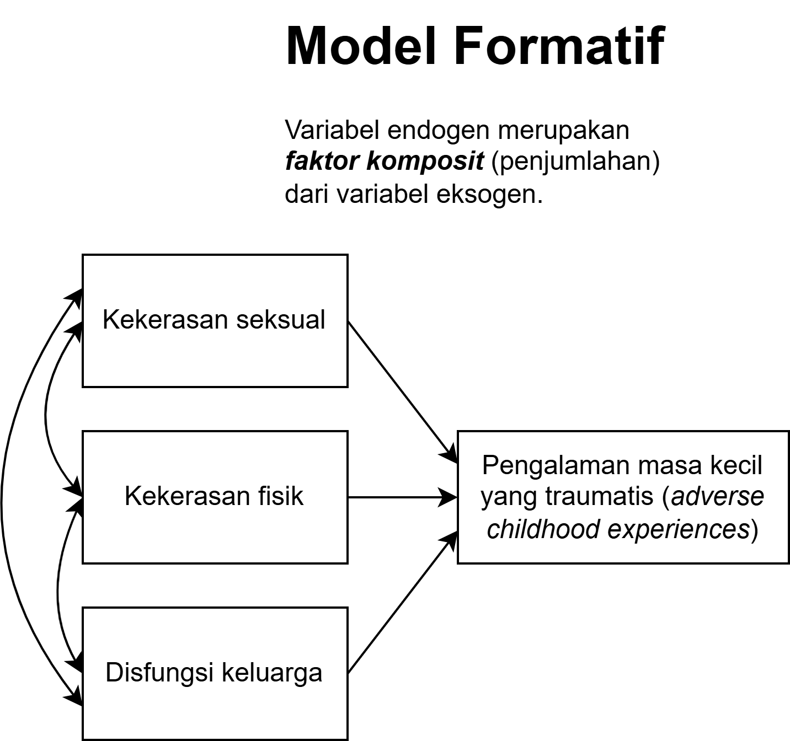

Pengantar
Multigroup Structural Equation Modeling: Bagian 1️⃣
2026-04-26
Outline
- Apa itu structural equation modeling (SEM)?
- Mengapa dan pada kondisi seperti apa SEM diperlukan?
- Beberapa pilihan perangkat lunak untuk mengeksekusi SEM
- SEM atau PLS?
- Yang tidak dicakup dalam workshop serta keterbatasan
jamovi
Apa itu structural equation modeling?
Penggunaan SEM
- Pernahkah ibu/bapak menggunakan SEM sebelumnya?
- Untuk apa SEM digunakan?
SEM adalah… 1️⃣
Model yang mencakup hubungan antara observed dan latent variables dalam berbagai bentuk model teoritis.
SEM memungkinkan peneliti untuk melakukan pengujian hipotesis yang berkaitan dengan model tersebut.
Model SEM mengasumsikan (hipotesis) bahwa seperangkat variabel (observed) mendefinisikan sebuah konstruk laten, dan menggambarkan bagaimana hubungan antara konstruk-konstruk laten ini.
SEM adalah teknik yang lebih sophisticated untuk menggambarkan hubungan antar-variabel karena mengontrol error pengukuran dari estimasi korelasi.
SEM adalah… 2️⃣
- Tujuan SEM adalah untuk mengetahui apakah model teoritik yang diuji peneliti didukung oleh data
- Apabila data memberikan bukti yang mendukung bahwa hubungan antar konstruk/variabel terjadi, maka mungkin hubungan tersebut memang benar-benar ada di populasi.
- Apabila data tidak memberikan bukti yang mendukung korelasi yang dihipotesiskan, maka peneliti dapat melakukan re-spesifikasi model dan menguji kembali model yang sudah dire-spesifikasi tersebut, atau menyusun ulang model yang baru untuk kemudian diuji kembali.
Penting
SEM adalah teknik yang theory-driven sehingga modifikasi/re-spesifikasi model harus memiliki alasan teoritis.
Jenis-jenis variabel dalam model SEM 1️⃣
- Variabel observed
- Variabel yang dapat diukur langsung dengan berbagai cara/strategi (e.g., self-report, behavioral checklist, dsb.).
- Dalam pengukuran Psikologi, item pernyataan (dalam skala Psikologi) adalah variabel observed.
- Variabel latent
- Konstruk/variabel yang tidak dapat diukur/diamati secara langsung.
- Oleh karena itu, membutuhkan variabel observed untuk mengukurnya.

Jenis-jenis variabel dalam model SEM 2️⃣
- Variabel eksogen
- Variabel yang hanya memberi direct effect pada variabel lain di dalam model yang sama
- Variabel endogen
- Variabel yang hanya menerima direct effect pada variabel lain di dalam model yang sama

Model SEM terdiri atas…
- Model regresi (linear/OLS)
- Menguji hubungan antar variabel observed
- Model jalur (path model)
- Menguji hubungan antara dua (atau lebih) variabel observed dan latent
- Bisa juga menguji hubungan antara dua (atau lebih) variabel latent
- Model pengukuran (measurement model/confirmatory factor analysis)
- Menguji apakah item-item dari skala Psikologi (biasanya variabel observed) memang mengukur konstruk yang dihipotesiskan (biasanya variabel latent) validitas konstruk.
- SEM biasanya mengandung setidaknya dua model, yaitu model pengukuran dan model struktural (regresi/jalur).
Contoh model SEM

Model struktural

Model pengukuran

Mengapa SEM dilakukan?
Mengapa SEM?
Peneliti sudah memiliki kesadaran bahwa ia harus menyelidiki beberapa variabel penelitian secara bersamaan untuk menjawab pertanyaan penelitiannya.
Ada kesadaran bahwa peneliti selama ini mengabaikan faktor error pengukuran. SEM membantu peneliti untuk mengurangi efek measurement error terhadap estimasi korelasi antar dua (atau lebih) variabel yang diteliti.
Selama beberapa dekade kebelakang, SEM termasuk teknik analisis data yang sudah cukup matang pengembangannya, dan dapat mudah dilakukan dengan bantuan perangkat lunak.
Contoh aplikasi SEM
Seorang peneliti psikometri ingin melihat efek latar belakang sosioekonomi terhadap kepribadian partisipan dengan menggunakan pendekatan Five-Factor Model (Big 5). Maka, jenis kelamin, tingkat pendidikan, dan item dalam skala kepribadian adalah observed variable, sedangkan dimensi dari Big 5 adalah latent variable.
Seorang peneliti psikologi pendidikan ingin tahu apakah kepercayaan orang tua bahwa anaknya dapat berkembang secara natural (trust in organismic development — independent latent variable) berkorelasi dengan tingkat kemandirian anak (dependent latent variable).
Dalam konteks psikologi klinis, seorang psikolog klinis ingin tahu apakah personality trait (independent latent variable) dan status sosioekonomi (observed independent variable) dapat berdampak pada kecenderungan depresi dan kecemasan pada individu (dependent latent variable).
Dalam sebuah penelitian psikologi sosial, peneliti ingin tahu apakah personality trait (independent latent variable) dapat menjelaskan mengapa orang merespon pelanggaran moral secara berbeda (dependent latent variable).
Perangkat lunak untuk mengeksekusi SEM
- Perangkat lunak SEM sudah cukup user-friendly
jamovidanJASPadalah perangkat lunak SEM yang hanya memerlukan coding yang sangat minimal.- Namun
jamovidanJASPfungsinya agak terbatas, karena tidak menyediakan opsi power analysis dan simulasi. - Selain itu, peneliti dapat menggunakan
Onyx,LISREL,SPSS AMOS,EQX,Mplus,STATA,lavaan(+semTools) di atausemopydi dsb.
Asumsi SEM
Asumsi SEM
Penting
SEM merupakan teknik statistik yang theory-driven, sehingga asumsi teoritis yang melandasi model jauh lebih penting daripada asumsi statistiknya.
- Variabel endogen berdistribusi normal (multivariate normality)
- Korelasi antar variabel sifatnya linier
Normalitas data
- Mengapa distribusi variabel endogen tidak berdistribusi normal?
- Bisa jadi bentuk datanya ordinal/nominal, sehingga kalau menggunakan skala Likert, maka kemungkinan besar distribusi data menjadi tidak normal.
- Jumlah sampel terlalu sedikit.
- Distribusi data yang tidak normal akan berdampak pada variance-covariance matrix.

Apa yang harus dilakukan?
Untuk mengkoreksi distribusi data yang juling (skewness), probit transformation merupakan strategi yang terbaik.
Untuk mengkoreksi kurtosis yang tidak sesuai, membutuhkan prosedur yang agak lebih rumit.
- Beberapa diantaranya adalah dengan menambah jumlah responden, melakukan estimasi standard error dengan metode bootstrapping
- Bisa juga dengan menggunakan metode estimasi model parameter yang khusus untuk data yang tidak berdistribusi normal (e.g., robust methods seperti robust maximum likelihood (ML), atau weighted least squares).
Hati-hati
Estimator weighted least squares biasanya membutuhkan jumlah sampel lebih besar.
SEM atau PLS? 1️⃣
- Covariance-based SEM (yang kita pelajari saat ini) merupakan teknik statistik yang mengestimasi parameter model dengan cara meminimalisasi diskrepansi antara data (observed covariance matrix) dengan spesifikasi model yang dihipotesiskan (implied model).
- CB-SEM berakar dari tradisi common factor theory, bahwa variabel laten (konstruk psikologis) yang menyebabkan indikator (item di skala psikologis) bervariasi, dan indikator-indikator ini berbagi varians hanya melalui variabel laten tsb.
- CB-SEM menggunakan model pengukuran reflektif.
- Mayoritas konstruk psikologi menggunakan model pengukuran reflektif, bukan formatif.
SEM atau PLS? 2️⃣
- Partial least squares (PLS) mengestimasi skor variabel endogen dengan asumsi bahwa variabel endogen adalah weighted composite, kemudian melakukan regresi atas komposit-komposit tersebut satu sama lain.
- Asumsi PLS sangat berbeda dengan CB-SEM - variabel endogen adalah komposit bukan faktor laten.
- PLS menggunakan model pengukuran formatif.
- PLS sering “dijual” sebagai teknik alternatif dari CB-SEM yang “lebih praktis” karena bisa dieksekusi dengan sampel kecil, mampu menangani variabel endogen yang tidak berdistribusi normal, atau ketika menangani model yang sangat kompleks.
- Padahal sebenarnya, CB-SEM dan PLS adalah dua teknik dengan asumsi ontologis yang berbeda (Rönkkö & Everman, 2013; Henseler, et al., 2014), sehingga membandingkan kedua teknik ini saja sudah sangat tidak tepat (Rigdon et al., 2017).
Reflektif vs. Formatif


Selengkapnya, baca di materi confirmatory factor analysis.
Cakupan workshop
Yang tidak dicakup oleh workshop ini
- Exploratory factor analysis (EFA)
- A priori power analysis, Monte Carlo simulation, dan accuracy in parameter estimation (AIPE) untuk merencanakan jumlah sampel
- Sensitivity analysis untuk SEM
- Mixture model (SEM untuk desain penelitian longitudinal) latent growth curve
- Model SEM dengan missing data
- Model SEM dengan variabel moderator/mediator
- Model SEM ketika variabel eksogen (indikator) dichotomous
- Hierarchical latent variable model (second-order CFA)
- Exploratory SEM (ESEM)
- Partial least square (PLS)
- Multiple indicators, multiple causes model (MIMIC)
Ada pertanyaan❓

Note
- Paparan disusun dengan menggunakan dan Quarto dengan template dari UNAIR Theme.
- Kontak saya via amelia.zein@psikologi.unair.ac.id